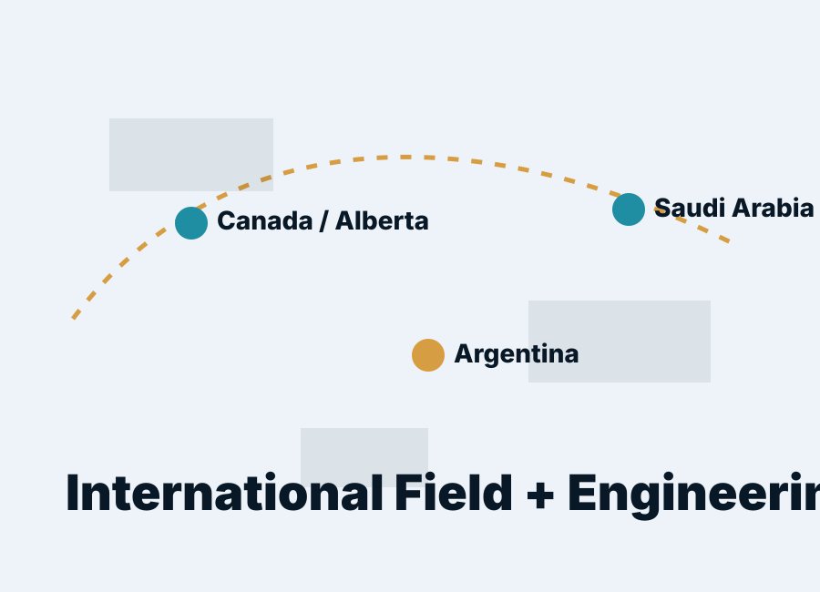

Well Design
Conceptual and detailed support for well architecture, casing strategy, drilling parameters and constructability reviews.
Fort McMurray • Canada • Argentina • Saudi Arabia
Independent consultant with 30+ years of international experience in well design, drilling engineering, field execution, technical assurance and operational support for demanding energy projects.
Technical credibility + client service
Carlos brings the discipline of field operations and the precision of engineering design. The value proposition is simple: strong technical judgment, clear communication, practical solutions, safe execution and dependable support when decisions need to be made quickly.
Core Capabilities
Conceptual and detailed support for well architecture, casing strategy, drilling parameters and constructability reviews.
Drilling programs, offset review, risk identification, operational planning and engineering support for execution teams.
Shift-based operational support, coordination with crews, troubleshooting and practical decision-making under field conditions.
Reviews of procedures, design basis, lessons learned, quality checks and alignment with operator requirements.
Operational optimization focused on reducing non-productive time, avoiding rework and improving execution efficiency.
Planning aligned with well control, casing, surface casing, pipeline/interface and HSE expectations applicable to the project.
International Background
From mature South American fields to Middle East operations and Alberta energy projects, Carlos understands that engineering decisions must work in real field conditions: crews, equipment, schedule pressure, safety exposure, geology, weather and cost.

Standards & Regulatory Awareness
This section should be validated project-by-project by the operator/licensee. It positions Carlos as regulation-aware, without claiming legal responsibility for the operator’s compliance.
Project Examples
Technical support for well planning and execution in Northern Alberta operations. Add operator, well type, scope, challenge and measurable result.
International experience supporting demanding drilling environments with strong safety and performance expectations.
Hands-on field and engineering background across oil and gas operations, bridging design intent with practical execution.
Available for consulting, contractor assignments, technical reviews, operational support and project-based engagements.
Start a Project InquiryContact
Use this form structure with Formspree, Netlify Forms, Gmail/Outlook automation or a Google Sheet backend.
Phone: +1 (438) 866-2398
Email: replace-with-email@example.com
Location: Fort McMurray / Alberta, Canada